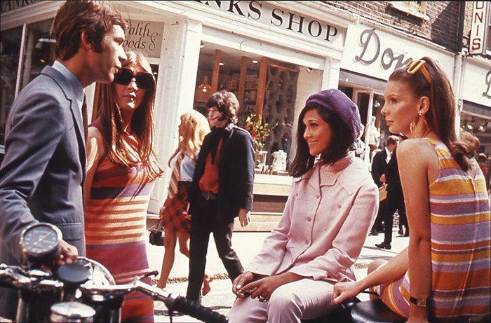
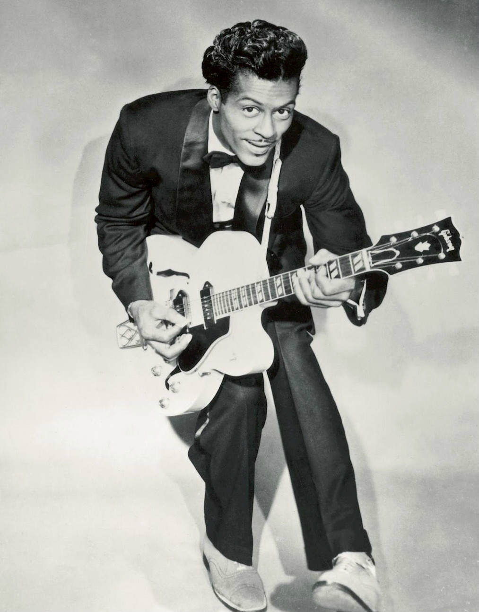
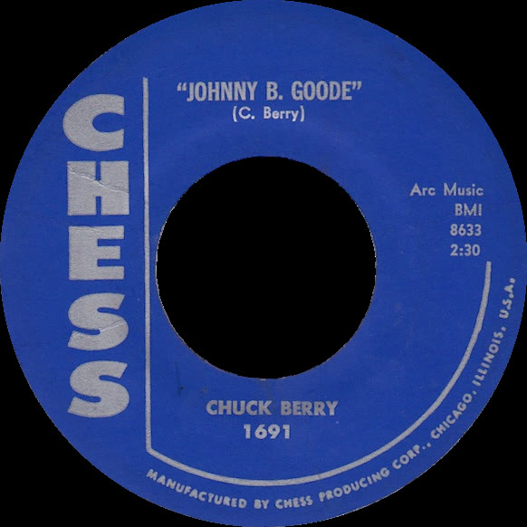
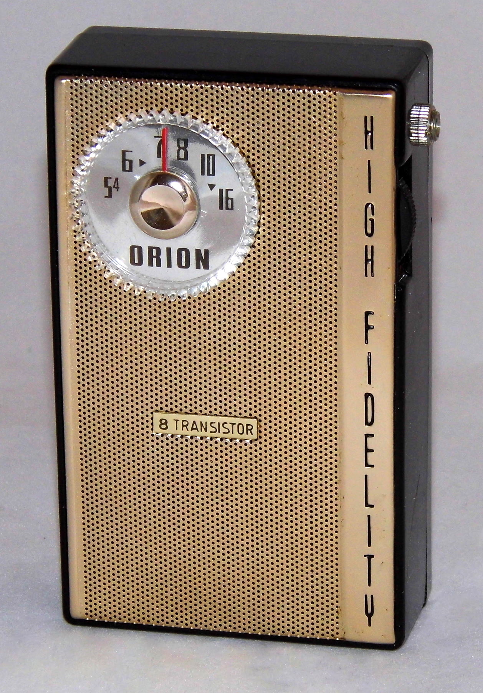
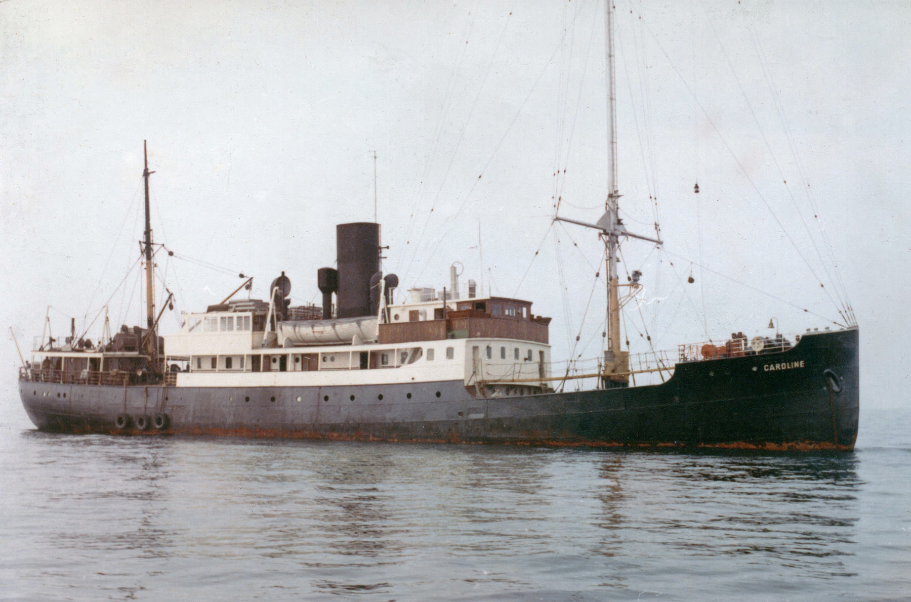
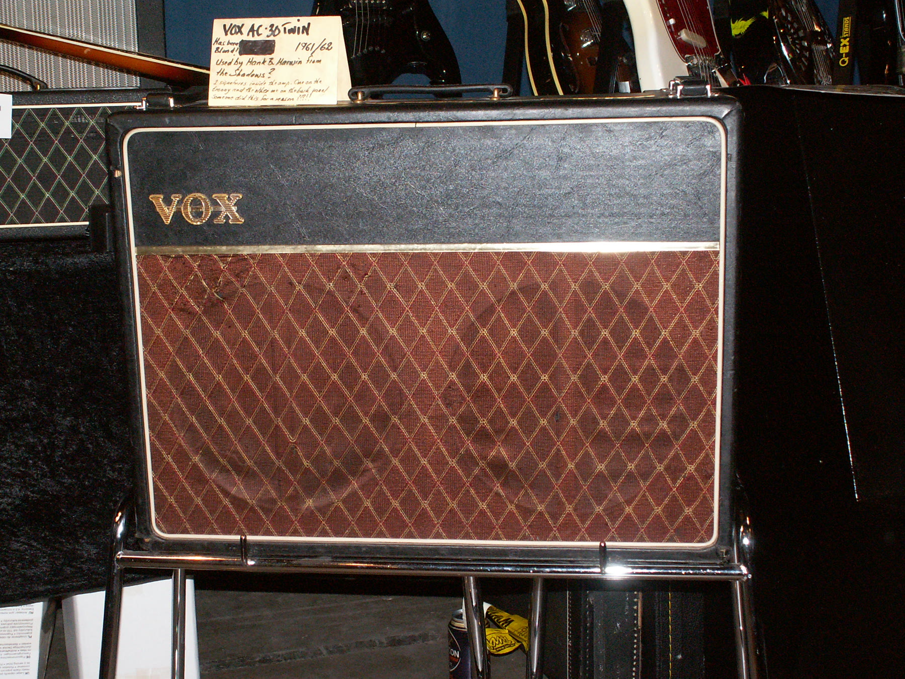

Tuesday · Music
British Invasion (c. 1963–67): selling America its own records back
From skiffle and pirate ships to Beatles, Stones, and Kinks — and the Black American records they had been learning from.

{kind=link}
“British Invasion” is an American radio and press name for British beat groups hitting the U.S. charts after 1964. From London the same years were also pirate radio, a BBC that still rationed pop, and a generation that had learned guitar from American R&B records. This capsule looks out from Britain. It does not treat Motown or Tokyo as decoration.
Select any words, or tap a dotted term.
- 1956 Skiffle Lonnie Donegan’s “Rock Island Line” makes a U.S. folk-blues song a British teenage instrument kit.
- 1962 Liverpool / London Beatles sign to Parlophone; the London R&B clubs are already covering Chess and Motown.
- 1964 Ed Sullivan / Caroline Beatles on U.S. television in February; Radio Caroline begins offshore in March.
- 1964 Kinks / Stones “You Really Got Me”; the Stones keep the Chicago debt louder than the suits would like.
- 1965–66 Elsewhere Motown and Stax in the U.S.; Group Sounds in Japan; yé-yé already on French radio.
- 1967 Door ajar Sgt. Pepper and the turn toward psychedelia. The Invasion name starts to look too small.
Before
A guitar, a washboard, and other people’s records
Postwar Britain had American records before it had a name for what to do with them. and rock and roll arrived as classified imports, as merchant-seamen singles, as the B-sides of things the Light Programme did not love. Chuck Berry’s “Johnny B. Goode” was a 1958 single from Chicago. In Britain it was homework.

{kind=link}

{kind=link}
made the homework cheap. Lonnie Donegan’s “Rock Island Line” — a Lead Belly song, recorded in London — became a British hit in 1956. A washboard and a tea-chest bass were enough to start a group. John Lennon’s Quarrymen were a band. So were half the people who later grew fringes.
The BBC did not refuse pop. It rationed it. Needle-time agreements limited recorded music on air. If you wanted more than the official dose, you needed a radio that was not polite, or a ship that was not in British waters yet.
The era
Britain looks at America, and America looks back
From London and Liverpool the story is not “we invented rock.” It is: we learned these records, we played them faster and louder in rooms the size of a pub, and then American television decided we were a phenomenon. The Beatles’ “I Want to Hold Your Hand” reached the U.S. in late 1963. On 9 February 1964 they played The Show. The phrase “” is what American radio called the months that followed.

The Rolling Stones kept the Chicago debt in the foreground: covers, a longer haircut, a refusal to be variety. The Kinks, in 1964, put a sliced speaker cone under “You Really Got Me” and made a London riff that did not sound like a cover. None of this erases Berry, or , or the fact that American pop radio had often kept those sources in a separate chart.

The same years, not as a required pair: in Detroit, was already a finished system — writers, a house band, a finishing school for movement. In Memphis, was cutting Southern soul with a biracial house band. In Japan, bands were taking electric guitars into a market that had its own kayōkyoku tradition. In France, was already a word. Britain was not the only place the 45 rpm single was rewriting a generation. It was the place American television decided to point the camera.

People
Who is in the room when the records change hands
Chuck Berry
1926–2017
St. Louis guitarist, . British groups covered him so often the covers became a curriculum. The Invasion’s joke — selling America its own Black music back — is a joke with his name on the label.
The source, not the opening act.Wikimedia Commons / public domain
Lonnie Donegan
1931–2002
Scottish-born singer. “Rock Island Line” (1955–56) showed a British teenager that an American folk-blues song could be a hit without an orchestra. The washboard years are the unglamorous before.
The Beatles
1960–1970 as a group
Liverpool, then Hamburg, then . This capsule does not need another press shot of four men in suits. The relevant fact is the repertoire: Berry, Little Richard, girl-group records, and then songs of their own that American radio could not file as “foreign novelty” for long.
Berry Gordy
b. 1929
Founder of . In 1964 his label was not waiting to be invaded. It was already teaching America a different lesson about who got to be pop.
A story
The same riff, two charts
Put the label next to a 1964 British 45. The guitar figure is often cousin to cousin. The difference is the filing cabinet. American pop radio had spent the 1950s learning how to separate “race records” from the hit parade, then how to let a few of them through. British teenagers, a few years later, heard the same and singles as the whole of modern music. When they sent the sound back, it arrived as white faces on Sullivan. That is not a small fact. It is the fact.
The honest version does not scold the British groups for learning. It asks who got paid, who got booked, and which name the camera learned first.
After
Psychedelia, and the name that stopped fitting
By 1966–67 the useful Invasion story — verse, chorus, suit, scream — was already too small. Revolver, then Sgt. Pepper, then a lot of other people’s sitars and tape loops. The door toward psychedelia is not a British monopoly either; San Francisco and Lagos and Lagos’s records in London are all in the same late decade. The name “” stays useful as a 1964–65 American chart event. It is a poor name for everything that happened next.
Radio 1 began in 1967. The pirates were legislated against. The records did not go back in the box.
A question
Leave this on the table
If a country sells another country its own music, who is the inventor in the room?
Fun fact
The BBC had a needle-time problem
Into the mid-1960s the BBC was bound by “needle time”: agreements with the Musicians’ Union that limited how many hours of records (as opposed to live studio bands) could be broadcast. Pirate ships were not just teenage romance. They were a way around a labor and licensing rule. Radio 1, created in 1967, was in part an official answer to that gap.